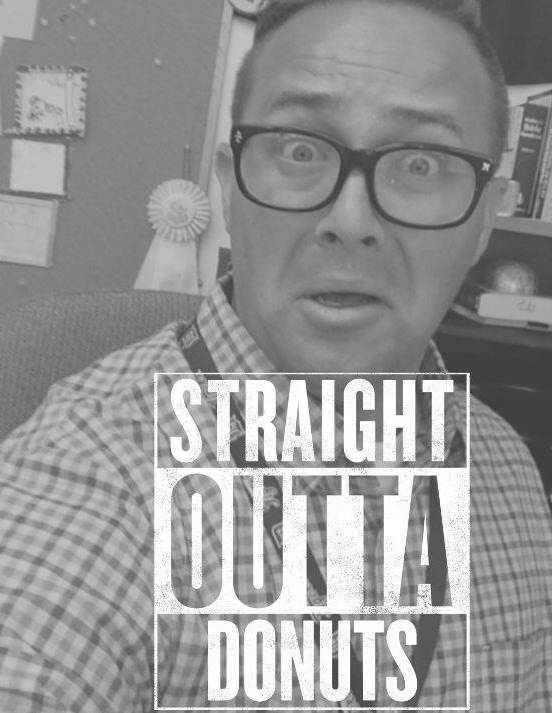

I was born in Ft. Lauderdale, Florida, raised in Durand, Michigan. Going to college in Clarks Summit, Pennslyvania, I received my degree in Bible with an emphasis in Youth Ministries. I am a teacher at Faith Christian Academy in Martinsburg, West Virginia . I have been married for 12 years and have four children, ages 5-11. I enjoy fishing, reading books, playing sports, fishing, playing video games, attending concerts, fly fishing, coding, and teaching... did I mention I like fishing? It's probably one of my favorite hobbies.
 Fishing Tales
Secrets of Fishing
Who am I?
Contact Me
Fishing Tales
Secrets of Fishing
Who am I?
Contact Me

Follow us on Social Media!